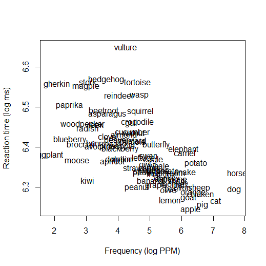
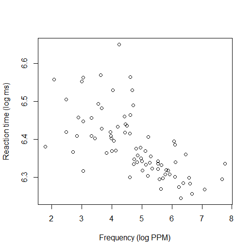
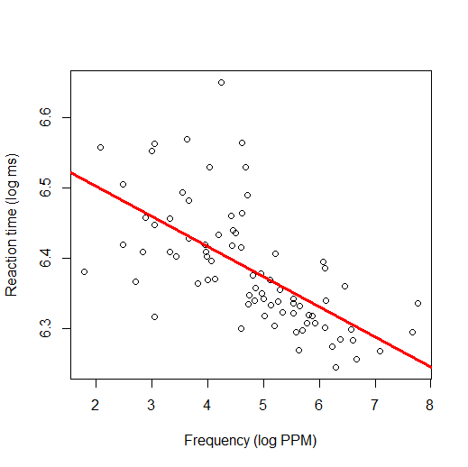

Welcome to regression. This is the big one. All the statistical tests we've talked about in other modules (like
t-tests and ANOVA) are based on regression; in fact, they are just special versions of regression (the same way a square is
just a special version of a quadrilateral). If you know how to do regression, you know how to test pretty much any hypothesis you
will ever have.
Regression can get very complicated, but it's based on a few simple principles. We will start from the simple
principles and gradually add on the extra complications so we can handle more situations.
Regression is, essentially, about drawing a line that fits your data. Let's imagine a simple scenario first; we will
gradually extend this to more complicated scenarios.
Imagine you've done an experiment in which you let people see words and press a button in response, and you measure
how fast they respond to each word. Some of the words are more common (high-frequency) words, and some are less common
(low-frequency). You might get results like those shown in the figure below (data are from the
{languageR} package in R). From this graph you can see that some words, like
dog and cat in the bottom right corner, are both very common (high-frequency) and responded to very quickly
(reaction time is low). Some words, like gherkin and paprika in the upper left, are uncommon (low-frequency) and
responded to slowly (reaction time is high). And there are lots in the middle.

(If your own research does not fit this design, don't worry. This is just the simplest case; as I said, later we will
discuss how regression can handle other cases, like situations where your independent variable is categorical instead of something
numeric, or cases where you have more than just two variables. But you need to understand how this simple case works before you can
understand those other cases.)
To make things easier to see, from now on I will represent the data with just dots, rather than writing out the
words:

You can probably see that there's a pattern here. The words with higher frequency tend to have lower reaction times
(i.e., more common words tend to be responded to faster); there's an overall downward trend in the graph. When we do a regression,
what we are actually doing is finding the line that fits through this cloud of data the best (i.e., the line that is as close as
possible to all the dots). Here's what that line looks like:

You can see here that the best-fitting line through the data is one that slopes downward. This confirms the
impression we had before: words with high frequency tend to have lower RT, and words with low frequency tend to have higher RT.
Regression is, ultimately, a form of prediction. The regression line is telling you the predicted value for
words with a given frequency. For example, if you put your finger at the point on the x-axis where the frequency is 5, then move your
finger directly up to the red line, you will find that the height of the red line is about 6.37. What that means is, if we find a new
word with frequency of 5 and we test it in an experiment like this, we would predict that its reaction time would probably
be 6.37, based on what we've seen in the data so far. Because the line is sloping down, our predictions for words with different
frequencies will be different: a word with a frequency of 8 is a word that we predict will have a lower RT than a word with a
frequency of 3. That is why regression is a statistical test: we are testing whether there's a relationship between frequency and RT.
If there is no relationship between frequency and RT, then the regression line would be horizontal and flat, and our predictions for
RT would be unaffected by frequency (the predicted RT for a word with a frequency of 3 would be the same as the predicted RT for a
word with a frequency of 8). The fact that this regression line is not flat, but is substantially sloped, tells us that
there is a relationship.
To be able to describe regression lines, we need to know how the regression formula works.
Do the activities below to learn more and practice.
A regression equation is expressed in slope-intercept form, as:
\(y=bx+a\)
I assume everyone has learned about this in secondary school math class; if you need a review, you can search for
"slope-intercept form" online or check videos such as this one:
The important thing to know is that the intercept (a in the above equation) tells how high the dependent
variable is when the independent variable equals zero, and the slope (b in the above equation) tells how
much the dependent variable goes up whenever the independent variable goes up by one point.
In regression, we usually express the same equation with slightly different notation:
\(\hat{Y}=b_0 + b_1X_1\)
This is the same equation, we're just using different letters to represent things. The Y has a circumflex (a
"hat") on top; in regression, "hat" means "predicted". In other words, Y is the dependent variable, and
\(\hat{Y}\) (pronounced "Y hat") is the predicted value of the dependent variable. (These are different; keep in mind
that in the example we saw before, lots of points were not exactly on the regression line. The regression line is the
predicted RT at any given level of frequency, but the real data are often a little bit above or below the prediction,
because real data are messy and variable.) The intercept is called b0 instead of a, and
the slope is called b1 instead of just b. (The fact that it's called
"b1" foreshadows the fact that there can also be b2, b3,
etc.! Later we will see how this formula can be extended to accommodate more and more variables, but for now we'll
just think about this one.
Draw three different lines (you can use software or you can just draw by hand), and for each one write down the
approximate regression equation using the slope-intercept formula. Your formula will have the same format as
the one above, except b0 and b1 will be replaced with actual numbers.
When you do regression analysis, what you are doing is figuring out the line that fits the data—in other words,
you are figuring out which numbers go in the regression formula.
Let's consider the reaction time data we were looking at before (shown again here):
When you actually run a regression analysis in statistical software, what you will usually see is a set of numbers.
Here are the numbers I got for this regression line in R:
Coefficients: (Intercept) Frequency 6.58878 -0.04287
To understand what these mean, think back to the regression equation:
\(\hat{Y}=b_0 + b_1X_1\)
b0 and b1 are coefficients. You can see that the R results above tell
me the numerical values for these coefficients. b0 is traditionally the intercept.
b1 is, in this example, the coefficient for the Frequency variable (i.e., it's how much the
reaction time goes up whenever frequency increases by 1 point). So we can plug these numbers into the regression
equation to get the line described by the following equation:
\(\hat{Y}=6.58878 - 0.04287X_1\)
It should be clear by now that this is a line in slope-intercept form. 6.58878 is the intercept (where the line crosses
the y-axis, or, in other words, the reaction time we would expect for a word with a frequency of zero). The fact that
the Frequency coefficient is negative tells us that the line is sloping down. Specifically, it tells us that for
every 1 point of frequency, reaction time goes down by 0.04287.
Imagine you instead got the following regression results: Intercept = 3, Frequency = 0.25. Draw what the new
regression line would look like.